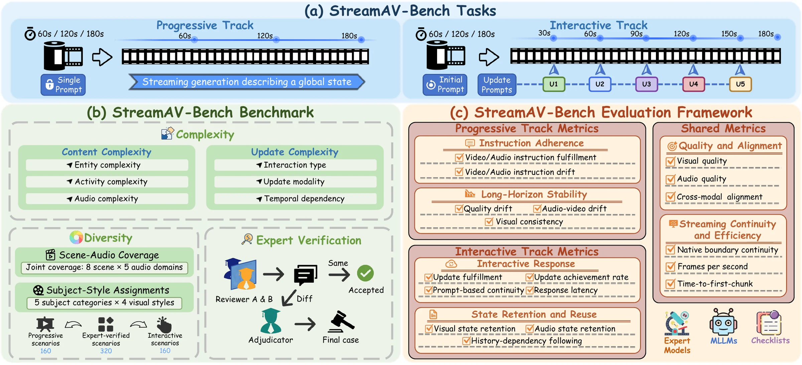
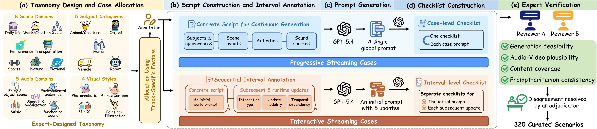
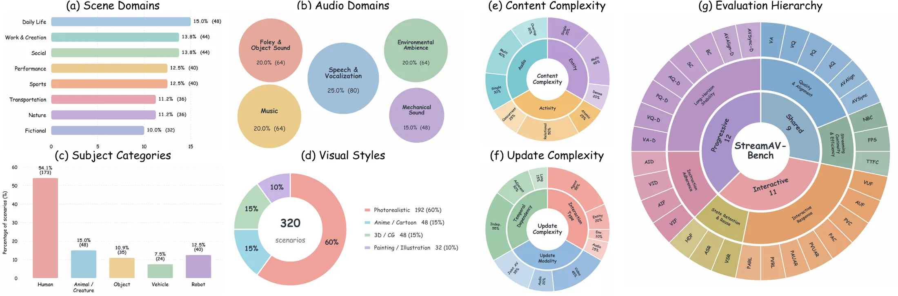

Time changes quality
Visual fidelity, audio quality, instruction adherence, and cross-modal alignment may drift as generation continues.
A Comprehensive Benchmark for
Streaming Audio-Video Generation
1BAAI 2PKU 3Kling 4THU 5USTC
Streaming generation
needs streaming evaluation.

The evaluation gap
Streaming systems generate incrementally while earlier clips become committed history. Users may keep a prompt fixed or update it at runtime. Evaluating only the completed output misses the failures that happen along the way.
Visual fidelity, audio quality, instruction adherence, and cross-modal alignment may drift as generation continues.
A model must execute dynamic state switches quickly, without erasing unrelated subjects, environments, or sounds.
Later instructions can depend on states established many intervals earlier, demanding active state reuse rather than passive continuity.
Two complementary tracks
Both tracks generate 180 seconds of synchronized content, and we also compare the first 60, 120, and 180 seconds of the same rollout.
A single global prompt drives continuous generation. We evaluate instruction adherence and long-horizon stability as the committed history grows.
An initial world is updated every 30 seconds. Updates vary by interaction type, modality, and temporal dependency on earlier states.
Benchmark construction
Domain experts define 8 scene domains, 5 audio domains, 5 subject categories, and 4 visual styles, then allocate 160 themes to both tracks. Every prompt and checklist is independently reviewed by two experts, with disagreements resolved by an adjudicator.

Evaluation framework
Expert models, multimodal judges, and case-specific checklists provide complementary evidence.
Visual and audio quality, cross-modal alignment, native boundary continuity, and streaming efficiency.
Instruction fulfillment and drift, quality degradation, subject and background consistency, and audio-video drift.
Update fulfillment, achievement and latency, prompt-based continuity, state retention, and history-dependency following.

What the benchmark reveals
No evaluated system simultaneously dominates quality, long-horizon stability, interactive response, and state reuse.
Native joint systems lead in audio fidelity, synchronization, and most interactive metrics. Cascaded pipelines lead in visual quality, semantic alignment, and most long-horizon stability metrics.
High quality or instruction fulfillment can coexist with large temporal drift. Quality and its evolution must be measured together.
Low latency among achieved updates does not imply reliable update achievement. Achievement rates, response latencies, and history reuse must be interpreted jointly.
Abstract
Recent advancements in generative models are pushing video generation toward unbounded streaming audio-video generation for real-time interactive worlds. However, existing benchmarks primarily evaluate completed sequences and struggle to capture streaming properties. To bridge this gap, we introduce StreamAV-Bench, the first comprehensive benchmark tailored for streaming audio-video generation. StreamAV-Bench establishes a unified evaluation framework, including the progressive track for instruction adherence and long-horizon stability, and the interactive track for interactive response and state retention and reuse. With expert-verified evaluation cases across 32 fine-grained dimensions, we conduct an extensive evaluation of 13 representative systems. Our analysis reveals that current models suffer from temporal drift in progressive generation and responsiveness bottlenecks during interactive control. Based on a comprehensive failure analysis, we share insights to advance the development of native joint audio-video streaming models.
Citation
If you find this benchmark useful, please cite our paper.
@misc{liu2026streamavbenchcomprehensivebenchmarkstreaming,
title = {StreamAV-Bench: A Comprehensive Benchmark for
Streaming Audio-Video Generation},
author = {Kaiqi Liu and Haoxuan Zeng and Jingqi Liu and
Jiacong Fang and Ziqi Cai and Yunyao Mao and
Henglin Liu and Yu Sheng and Shuchen Weng and
Boxin Shi},
year = {2026},
eprint = {2608.26336},
archivePrefix = {arXiv},
primaryClass = {cs.SD},
url = {https://arxiv.org/abs/2608.26336}
}